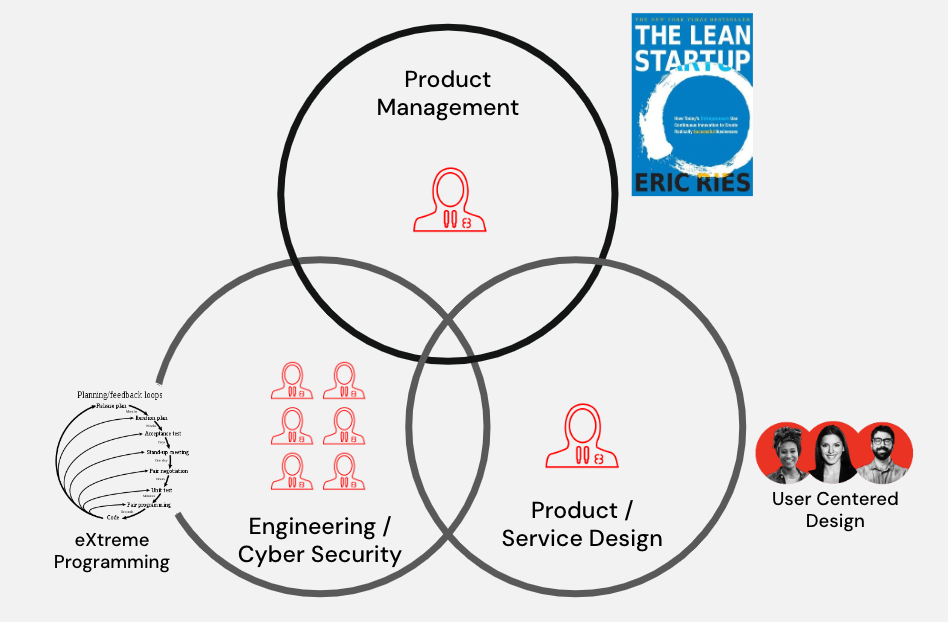

People
Just like any other problem worth prioritizing and solving, establishing cATO and Ongoing Authorization demands that we identify, build and support the right team - a Dream Team! Start by identifying a passionate change agent within your own organization who fully understands how software delivery is achieved today, and how it currently impacts both the business as well as the product teams who are focused on delivering outcomes to warfighters, operators and civilians. There is a high likelihood that this change agent will assume the role and responsibilities of a Product Manager, focused on navigating risks surrounding the viability of each cATO implementation detail as an opportunity to impact the business.

From there, you’ll want to build a fully balanced team by incorporating additional roles and competencies that help manage desirability risks, by employing User Centered Design and Service Design principles that considers the local goals, wants and needs of your users – including assessors and authorizing officials. Finally, you’ll also include the right mixture of engineering and cyber security personnel to manage feasibility risks for solution(s) that consider your local constraints.
In order to foster a decentralized, and creative working environment for this team to quickly discover and prioritize the right problems to help establish your cATO, we recommend applying Jeff Bezos’s 'two pizza' team concept. We’re starting down a journey that, believe it or not, has a lot of unknown unknowns, and by keeping the team small and nimble, we stand a greater chance at being able to quickly learn and make decisions to persevere or pivot on our strategies for cATO. By including the right balance of competencies, and empowering the team to own the outcomes of their decisions by way of accountability, you then also stand a greater chance of establishing and continuously improving cATO for the organization. Only when this Dream Team demonstrates success will they propose options and recommendations on how to address maturing and scaling the RMF implementation and cATO.
What if we don't have the right skills?
When you encounter situations such as members of a Dream Team possessing strengths for the local context of your business, but lack technical or industry experience for Lean Product Management, User Centered Design and modern engineering practices, we recommend leveraging a pairing model. The benefits of this approach are the long term investment in growing workforce talent, and it ensures that the team is well equipped with the full range of competencies to help navigate the various risks we’ve previously discussed. Pairing models demand trust, as each pairing situation typically looks like one person leading their teammate through the journey navigating the business with their years of knowledge and experiences with the local context. While the other teammate is focused on applying and teaching the practices and skills that will forge new behaviors that drive curiosity-led outcomes, rather than solutions and outputs.
Critical RMF Supporting Roles
We also recommend fencing off program dollars to be sent to the departments that manage the Security Control Assessors & Privacy Officer roles, competencies and standard operating procedures. This is an opportunity to partner and hire assessors that have strong technical proficiency as additional dedicated members of your cATO efforts. This is one of the most important plays in the playbook! You may need to help them award an appropriate contract for this, write job descriptions, and more. But it is important that technical assessors report to whoever is responsible for assessing systems in your organization, so that they maintain their independence. On average over 80% of the time spent getting an ATO is spent waiting in queue, and one of the largest pain points reported is the back and forth between engineering and (non-technical) assessors. This play solves for both. This is also another opportunity where a pairing model can increase the technical proficiency of your assessors if need be.
What if cybersecurity is not a strength for teams?
Whether it's the actual teams implementing and supporting cATO, or the product teams who are delivering outcomes to warfighters, operators and civilians, we want to observe how security, privacy and operations become first class citizens throughout the system life cycle. There are actually multiple recommendations that should be considered here.
Start with a principle of learning by doing, by creating learning opportunities directly within, and throughout, your SDLC processes. Similar to the pairing model described earlier, and to support our rationale for having dedicated assessors, there is an opportunity for product teams to pair with assessors beyond just the assessment step of RMF. Think of it like embedding another subject matter expert into the product team, where the product team can now learn in near real-time about threats, weaknesses and general security concepts. This helps:
- Create a bi-directional learning environment for teams to learn about cybersecurity and complex privacy laws and regulations, and assessors to learn deeper context about the products they will be assessing.
- Build better quality into your products, earlier.
- Reduce the feedback loop process between control implementation, assessment and authorization.
- Improve the overall trust between product, security, and privacy teams.
You should also consider leveraging the educational content that is readily available in the security, privacy and RMF tools you leverage within the SDLC process. While this seems obvious, you would be surprised how often organizations don’t grant product teams direct access to tools that are governing their ATOs, or that provide vulnerability feedback and remediation examples. If you could help product teams learn and understand what cybersecurity and privacy weaknesses their systems could be impacted by, before they even started writing code, would you? Commercial software such as Security by Design Elements (SD Elements) is a solution we frequently leverage to support just that. Product, security and privacy teams can outline unique context about a given system by way of a threat model and survey which help to identify potential risks and weaknesses that can be addressed as the system is being developed. During the SDLC process, engineers have access to a wealth of training content about these potential risks and weaknesses, why they’re important, and actionable remediation tips. Because product, security and privacy teams all have access to the same toolsuite, their ability to pair and support one another becomes even more effective and efficient.